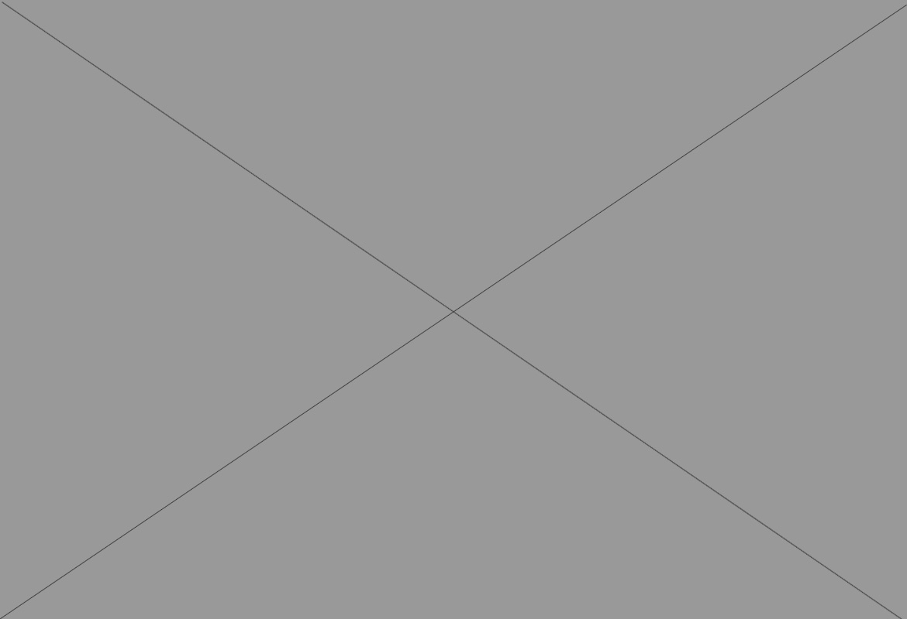

Brooklyn Brewery
Registration Website
During my time as a web designer at Services for the Underserved, a human services non-profit in New York City, I designed and coded marketing pieces for various fundraising events. During October, SUS conducts an Annual Octoberfest. This event utilizes a landing page for ticket registration, an email campaign and a printed invitation that was distributed to a selected group of young professionals.
